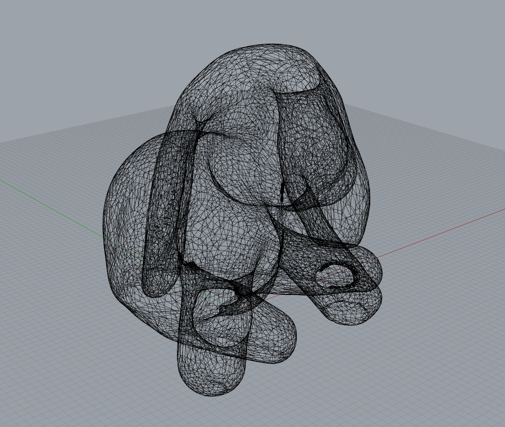
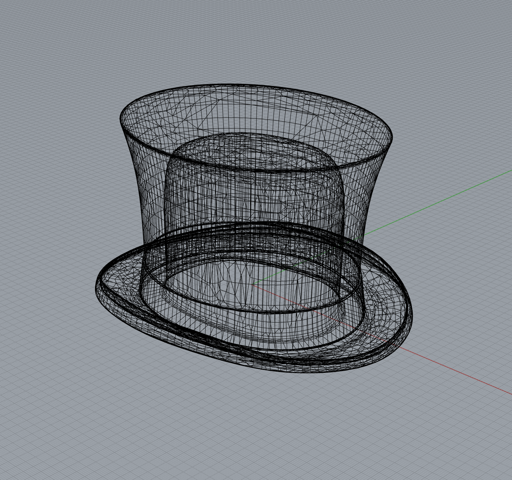

Getting Meshy and Lamps

The Goal
Combine 2 STL files to create a single printable mesh and get started on designing a lamp!
Combining a Bunny and a Hat
I found STL files of a bunny and a hat on Thingiverse! I put them into Rhino, reduced the meshes with ReduceMesh, used Edge Analysis to find problems, and fixed naked edges with FillMeshHole!
 After both meshes were closed, I combined the two meshes with MeshBooleanUnion. My STL (dogHat.STL) exported with no issues, and I ended up printing it! Turned out pretty cute. The original STL files for the bunny and dog can be found on my Github!
Starting My Lamp
For my lamp, I was interested in using dichroic film or mirror film. I sketched out my ideas in my sketchbook. After considering several different ideas, I decided to work on a lamp that incorporated one-way mirror film-lined polycarbonate sheets. I'll model and 3D print a frame with four slots that the polycarbonate sheets can slide into. This frame would attach to the light. When the lamp is off, it acts as a mirror. When the lamp is on, the viewer can see into the lamp which would display an infinity illusion effect.

After settling on an idea, I started working on the inner component to attach my lampshade to the light. I needed to find a good fit first, so I went through a lot of trial and error trying to determine a solid fit. When modeling the various test pieces, I utilized Grasshopper to help me easily vary the size of the diameter that the light components would fit through. My last test provided a good fit around the light, so my next steps are to modify that test model to accommodate and attach to the other parts of the lampshade.
Download the Rhino and STL files for the dogHat mesh on GitHub.
Download the Rhino, Grasshopper, and STL files for the lamp's current work-in-progress on GitHub.